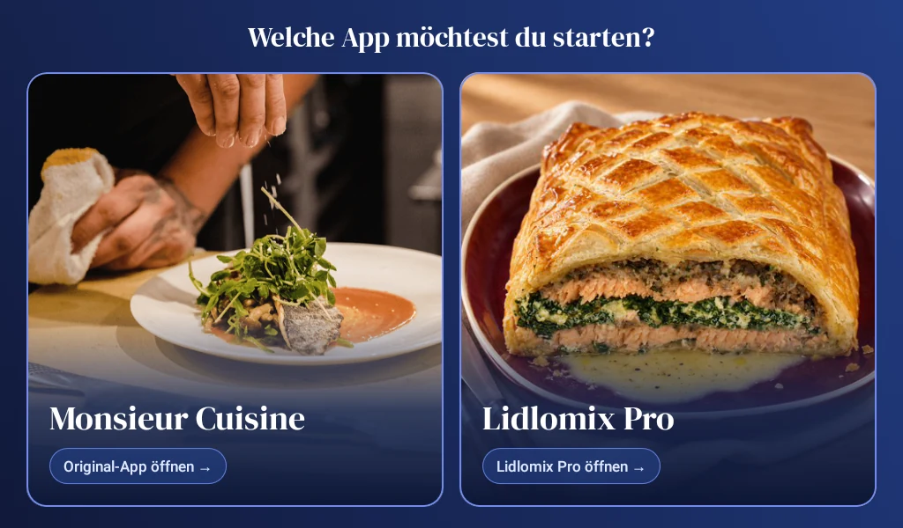

02 / Ausgabe 0.15 ·
Zwei Apps auf einem Connect
Ich hatte bereits angefangen, die app zu schreiben, aber ich hatte immer noch keine möglichkeit, sie auf dem roboter zu starten. Ich fand eine führung in einem video von jemandem, der spiele auf einem lidlomix spielt.
Das Video zeigte auch eine Möglichkeit, sich mit dem Gerät zu verbinden. Meine verbindung fiel während der arbeit immer weiter, so dass ich mehrmals von vorne beginnen musste. Sobald Pro lief, wollte ich den Zugriff auf die Werks-Monsieur Cuisine-App behalten. Das führte zu einem Startbildschirm mit zwei Kacheln. Ich habe es auch nach einem Neustart getestet. Wie ich mich mit Android verbunden habe
1. Auswahl der Anträge

Zuerst musste ich den Roboter beim Schalter aus- und einschalten, um Apps zu wechseln. Ich habe später einen wisch von rechts hinzugefügt, um zum app-wähler zurückzukehren, sowie eine neustartoption im menü.
2. Menü Lidlomix Pro

Ich habe die Programm-Icons im Hauptmenü neu gestaltet. Das Slicer-Symbol zeigt Gemüse, so dass sein Zweck auf einen Blick klar ist. Ich entwerfe und füge immer noch die Icons hinzu, die in einzelnen Programmen verwendet werden.
3. Offlineverzeichnis

Durch das Ändern der Sprache in der Factory-App wurde auch geändert, welche Rezepte verfügbar waren. Ich stellte Rezepte aus verschiedenen Ländereditionen in einem Katalog zusammen, übersetzte sie ins Polnische und entfernte Duplikate. Ich behielt Varianten für die verschiedenen Modelle und wandte die Einstellungsrichtlinien an, die ich zuvor ausgearbeitet hatte.
Der Test Connect zeigt 8.613 Rezepte, die auf dem Gerät gespeichert sind. Sie können Rezeptkarten offline suchen und öffnen. Die Ergebnisse stammen direkt aus der lokalen Datenbank, ohne darauf zu warten, ein Rezept herunterzuladen.
4. Rezepte Customized Pro
In der beschriebenen Version enthielt der Pro-Katalog 6.203 Rezepte.